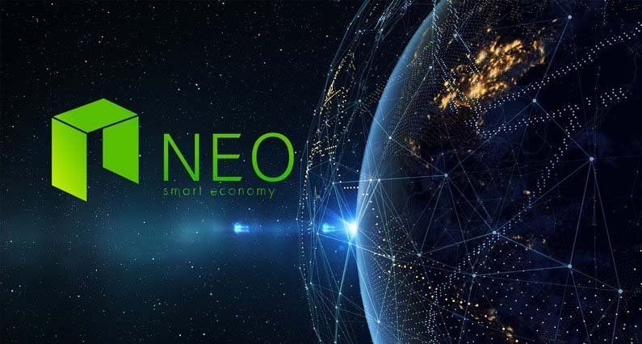
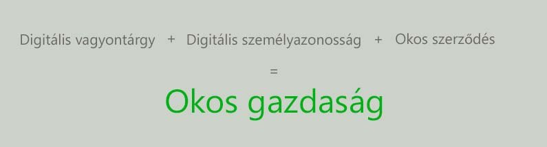
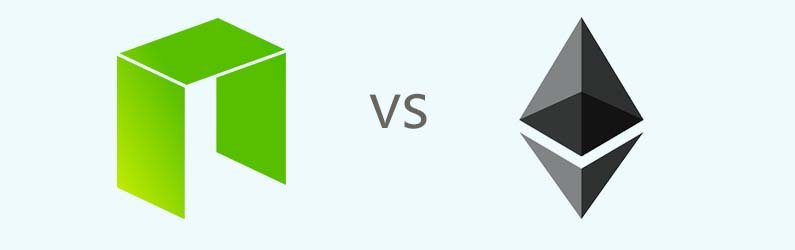

Mi az a NEO? Útmutató kezdőknek
NEO-t amely korábban Antshares néven volt ismeretes (2017-ben azonban átnevezték), legtöbben „Kína Ethereum”-ának becézik. Amíg nagyon hasonlít Ethereum-ra addig lesz néhány érdekes funkciója amit mindenképpen érdemes lesz közelebbről megvizsgálni.
NEO, csak úgy mint Ethereum egy olyan platform amelyre Okos szerződéseket és Dapp-okat lehet építeni, azonban más célja és irányzata van. NEO Intelligens Gazdasági Ökoszisztémának (Smart Economy Ecosystem) nevezi magát.
NEO egy non-profit, közösségi alapú blokklánc projekt amely blokklánc technológiát és digitális személyazonosságot használ, hogy digitalizálja a vagyontárgyakat, kezelje ezeket a digitális vagyontárgyakat, Okos szerződések segítségével és hogy létrehozzon egy „okos gazdaságot” az elosztott hálózat segítségével.
Shanghai-ban honos cég OnChain által lett fejlesztve. OnChain pedig Da Hongfei és Erik Zhang által.
Digitális vagyontárgy
Digitális vagyontárgy olyan programozható eszközök amelyek elektronikus adat formájában léteznek. Blokklánc technológiával vagyontárgyak digitalizálása decentralizált, megbízható, lenyomozható lehet, és még közvetítők bevonására sincs szükség. A NEO blokkláncon felhasználók képesek regisztrálni, kereskedni és terjeszteni többféle vagyontárgyat.
Képzeld el, hogy digitalizálod az autód, házadat, telefonodat a saját tulajdonjogod alatt. Létrehozol egy végrendeletet amely a fiadra hagy mindent. Ha bekövetkezik az elkerülhetetlen, minden vagyontárgyad átkerül a fiad tulajdonába. Pillanatok alatt és jogilag kötelezett formában.
A kapcsolatot egy digitális és fizikai vagyontárgy között digitális személyazonossággal lehet bizonyítani. A hitelesített digitális személyazonosságon keresztül regisztrált vagyontárgyakat törvény védi.
Digitális személyazonosság
Digitális személyazonosság az egyének, szervezetek személyazonosságára utal amely elektronikus formában létezik.
Okos szerződések
NEO Okos szerződéseit „NeoContracts”-nak hívják. Program fejlesztőknek nem kell megtanulni egy teljesen új nyelvet, hanem használhatnak C#, Java és egyéb népszerű programozási nyelvet.
Miben különbözik NEO és Ethereum?
Ethereum mutatta be a világnak az Okos szerződéseket, amelyek olyan kis programok amelyek a blokkláncon futnak le. Okos szerződések minden Ethereum csomóponton (node) futnak és az eredményüket a rendszer megerősíti. Mindenki tud csatlakozni az Ethereum hálózathoz és egy hálózati csomóponttá válni amely segít megerősíteni az Okos szerződéseket. NEO azonban sokkal centralizáltabb. Sokkal nehezebb hálózati csomóponttá válni.
Amíg Ethereum Okos szerződéseit Ethereum saját programozási nyelvében a Solidity-ben kell írni, addig NEO támogatja a C#, Java, Kotlin, Python, VB.Net, F#, Python-t. Azáltal, hogy a programozok használhatnak olyan programozási nyelveket amelyeket jobban ismernek valószínűleg növelheti az adaptációt amely előnyt ad NEO-nak Ethereum-al szemben.
NEO és GAS
A NEO hálózatnak kétféle tokenje van NEO és GAS. NEO és GAS is limitált 100 millió darabban létezik. A NEO token egyfajta részvénye a NEO rendszernek, és csak egészben léteznek tehát nem lehet 1 NEO-t feldarabolni. Azok akik ilyen NEO tokenek birtokában vannak, szavazhatnak a rendszerben az új hálózati csomópontokra amelyek megerősítik a tranzakciókat. A hálózati csomópontok döntik el a tranzakciók díjait a NEO hálózaton, amelyet GAS-ban fizetnek. Jelenleg az utalások ingyenesek a NEO blokkláncon, de ez a jövőben változni fog ahogy egyre több tranzakció lesz.
NEO token birtoklása azt is jelenti, hogy a tulajdonos jutalmat kap GAS token formájában. Nem kell a NEO tokent online tartani, csak egy tárcában kell, hogy legyen.
A GAS arányosan kerül elosztásra NEO birtoklásnak megfelelően. Ezen a NeotoGas oldalon kiszámolható mennyi GAS jár NEO birtoklásáért.
A blokklánc építésével 8 GAS/blokk képződik. A gyártási arány 1 GAS tokennel csökken minden 2 millió blokk után. 2039 környékén GAS eléri a 100 milliót darabot és megáll a termelés. NEO-val ellentétben, GAS feldarabolható.
Megegyezési rendszer
NEO egy Delegated Byzantine Fault Tolerance (dBFT) nevű megegyezési szerkezetet használ. A rendszer résztvevői kijelölnek bizonyos hálózati csomópontokat (node) könyvelőknek. A könyvelő csomópontnak birtokolnia kell egy bizonyos összegű NEO-t és meg kell felelnie bizonyos teljesítmény követelményeknek.
Könyvelők feladata, hogy ellenőrizzék a blokkokat a blokkláncon. Ha a node-ok 2/3-a egyetért a könyvelővel akkor a blokklánc elfogadott lesz. Ha a megegyezés nem sikeres egy másik könyvelőt hívnak és a folyamat megismétlődik.
A dBFT rendszerrel és más optimalizációkkal NEO állítása szerint képes 1,000 tranzakciót bonyolítani másodpercenként, és még növelni szeretnék ezt 10,000-re. Ethereum jelenleg 15 tranzakció/másodperccel dolgozik.
Ezek hatalmas előnyöknek számítanak azonban ez a rendszer decentralizáltságába kerül.
NEO és GAS vásárlás és tárolás
Legegyszerűbb módja ha először Bitcoin-t vagy Ethereum-ot vásárolsz Coinbase vagy BitPanda-án. Ezután többek között Binance vagy Bitfinex segítségével cserélheted Bitcoin-t NEO-ra. Bitcoin vagy Ethereum beszerzése után Binance és Bitfinex oldalon részletes útmutatót találsz hogyan válthatod egyik kriptovalutádat egy másikra. GAS-t Binance vagy Poloniex weboldalon tudsz váltani.
NEO tárcák-ról a hivatalos oldalon tájékozódhatsz itt találsz csaknem minden platformra megoldást. Ugyanakkor Ledger Nano S is támogatja NEO-t. Fontos, hogy NEO-t ne tároljuk kritpovaluta kereskedő weboldalakon, mert ott nem minden esetben tudják kiutalni nekünk a GAS részesedést.
Végszó
NEO és csapata nagy lépéseket tesznek, hogy gyökeret eresszenek az Ázsiai piacon. A jelenlegi gyors technológiai fejlődés Ázsiában, és kritikus szerepük mint gyártók, teszik ezt a régiót a fejlesztők melegágyává. Az ázsiai piacok mint Kína, Japán halkan meghatározó elemeivé válnak a blokklánc technológiának.


2018. Január 17.